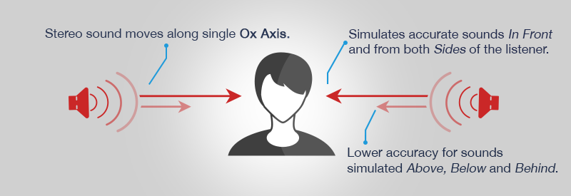
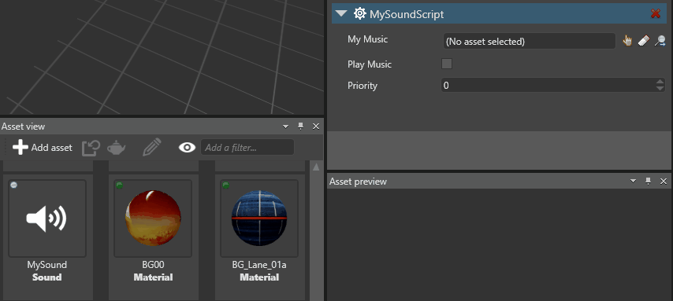

Непространственный звук
Начинающий Программист
Непространственный звук (Non-spatialized audio) звучит одинаково на протяжении всей сцены, независимо от положения объектов (например, камеры игрока).Он стерео и движется вдоль одной оси (обычно оси X). В отличие от пространственного звука, volume, pitch (frequency), и других параметров пространственного звука не изменяются. Это полезно, например, для фоновой музыки и звуковых эффектов меню.

Непространственный звук не требует аудио излучателей или аудио слушателей.
1. Импорт звукового файла и включение его в сборку
Убедитесь, что аудиоактив является корневым активом. Корневые активы — это активы, которые Stride включает в сборку, чтобы их можно было использовать во время выполнения.
В Просмотр активов (Asset View), щелкните правой кнопкой мыши по активу и выберите Включить в сборку как корневой ресурс (Include in build as root asset):

Если в меню указано Не включать в сборку как корневой ресурс (Do not include in build as root asset), опция уже выбрана, и вам не нужно ее менять.
2. Создание скрипта для воспроизведения звука
Чтобы воспроизвести непространственный звук во время выполнения, создайте его экземпляр и определите его поведение в коде. SoundInstance управляет звуком во время выполнения с помощью следующих свойств:
| Свойство | Функция |
|---|---|
| Зацикливание IsLooping | Получает или задает зацикливание звука. |
| Баланс Pan | Устанавливает баланс между левым и правым динамиками. По умолчанию каждому динамику присвоено значение 0. |
| Pitch | Получает или задает высоту звука (частоту). |
| PlayState | Получает состояние SoundInstance. |
| Position | Получает текущую позицию воспроизведения аудио. |
| Volume | Устанавливает громкость звука. |
Более подробную информацию см. SoundInstance API documentation.
Note
Если звук уже воспроизводится, Stride игнорирует все дополнительные вызовы SoundInstance.Play. То же самое касается SoundInstance.Pause (когда воспроизведение уже приостановлено) и SoundInstance.Stop (когда воспроизведение уже остановлено).
Например, следующий код:
- создает непространственный звук
- устанавливает зацикливание воспроизведения
- устанавливает громкость
- воспроизводит звук
public override async Task Execute()
{
// Загрузка звука
Sound musicSound = Content.Load<Sound>("MySound");
// Создание непространственного звука
SoundInstance music = musicSound.CreateInstance();
// Зацикливание
music.IsLooping = true;
// Устанавливка громкости
music.Volume = 0.25f;
// Воспроизведение
music.Play();
}
Альтернативный способ: создание скрипта с public переменными
Создайте public переменную для каждого аудиоактива, который вы хотите использовать. Вы можете использовать те же свойства, что перечислены вышe.
Например:
public class MySoundScript : SyncScript
{
public Sound MyMusic;
private SoundInstance musicInstance;
public bool PlayMusic;
public override void Start()
{
musicInstance = MyMusic.CreateInstance();
}
public override void Update()
{
// Если музыка не играет, но должна играть, включите ее.
if (PlayMusic & musicInstance.PlayState != PlayState.Playing)
{
musicInstance.Play();
}
// Если музыка играет, но не должна, выключите ее.
else if (!PlayMusic)
{
musicInstance.Stop();
}
}
}
Добавьте скрипт к объекту Entity
В Просмотре сцены (Scene view), выберите объект, к которому вы хотите добавить скрипт:

В Сетке свойств (Property Grid), нажимите Добавить компонент (Add component) и выберите свой скрипт:

Скрипт добавляется к объекту.
Если вы добавили public переменные в скрипте, вам необходимо привязать их к аудиоактивам.
Перетащите актив из Просмотра активов (Asset View) в каждую переменную:

В качестве альтернативы нажмите
 (Выбрать актив (Select an asset)):
(Выбрать актив (Select an asset)):Затем выберите аудиоресурс, который вы хотите использовать: